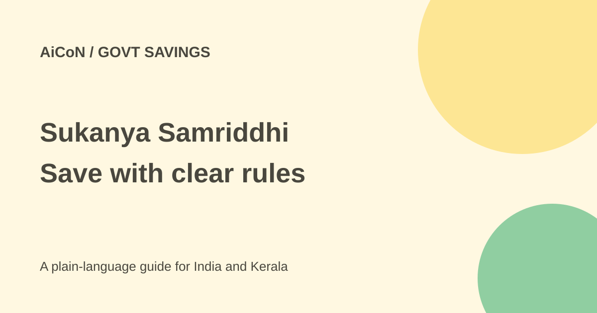

Sukanya Samriddhi: eligibility, deposits and maturity
Sukanya Samriddhi is a long-term savings account for a girl child. You put money into it. It is not a government cash grant, and normal maturity is 21 years from account opening.

Who can open an account?
A guardian can open it for a girl who has not reached her tenth birthday. The official 2019 scheme provides one account per girl and normally a maximum of two girls' accounts in one family. Specified twins and triplets exceptions need supporting documents. Do not assume the normal two-account rule covers every multiple-birth case automatically.
The application includes the girl's birth certificate and guardian documents. The official form declares both the guardian and depositor to be resident citizens of India and requires changes of residency or citizenship to be reported. Confirm any unusual eligibility situation with the post office or authorised bank.
How much must you save?
- Minimum opening deposit: ₹250.
- Minimum deposit in each financial year: ₹250.
- Maximum total deposit per financial year: ₹1.5 lakh.
- Subsequent deposits are in multiples of ₹50 under the scheme rules.
- Deposits can continue for 15 years from opening.
Normal maturity is 21 years from opening, not the girl's twenty-first birthday. For example, an account opened for a five-year-old normally matures about 21 years after that opening. It is not a short-term emergency savings account.
If the annual minimum is missed, the account is in default. The scheme permits regularisation within the 15-year deposit period by paying ₹50 for each default year plus that year's required minimum deposit. Ask the account office for the exact amount and process before paying.
Interest: check the current quarter
Interest rates are revised by the government for quarters. The 2019 rules contain an old 8.4% rate, while the official NSI history page checked here runs only to March 2026 and records 8.2%. Neither old date range establishes the current quarter by itself.
Financial Express reports 8.2% per year for October-December 2026, citing the government's unchanged-rate announcement. A third-party reproduction of the September order also says rates are unchanged. The accessible government pages checked did not supply the fresh October order. Treat 8.2% as currently reported, and confirm the official current rate at the account office before depositing or comparing returns.
The scheme calculates monthly interest using the lowest balance between the close of the fifth day and month-end, and credits interest at the end of the financial year. Do not assume a deposit made late in a month earns interest for that entire month.
Withdrawals and closure are restricted
For education, the scheme allows up to 50% of the balance at the end of the previous financial year after the girl turns 18 or passes Class 10, whichever is earlier. An admission offer or fee slip is required, and withdrawals are limited to the actual educational requirement under the rules. Instalments have separate limits.
Normal closure is at 21 years. Early closure for marriage needs the account holder to be at least 18 and falls within the specified marriage-related time window. Death and extreme compassionate grounds have separate provisions. The five-year restriction for compassionate closure is not a blanket rule for every kind of early closure.
How to start at a post office or bank
- Check the girl's age, residency and whether she already has an account.
- Choose a post office or authorised bank and ask for the current scheme form and KYC list.
- Take the birth certificate and required guardian identity and address documents. Confirm PAN/Aadhaar requirements with the office.
- Confirm the current interest rate, deposit method, default rules and withdrawal conditions.
- Deposit the chosen amount, obtain the passbook or account acknowledgement, and check names and birth date.
- Keep track of each financial year's deposits and save the statements. The girl operates the account herself after 18 with the required documents.
For Kerala families
Choose a contribution that fits the household budget rather than treating the ₹1.5 lakh cap as a target everyone must meet. Keep emergency money outside a long-lock-in account. Use the actual account office for questions and never pay an agent promising a free payout or unusually high fixed returns.
What changed since the original post?
The 1 October post left interest confirmation to the branch. This guide keeps that caution, adds default and education-withdrawal rules, and explains why old official rate tables cannot prove today's rate. The 15-year deposit period and 21-year maturity are different clocks.
Frequently asked questions
Is it a free government payment?
No. It is an account funded by your deposits.
Must I deposit for all 21 years?
No. Deposits are allowed for 15 years from opening; normal maturity is at 21 years.
Can I withdraw whenever I want?
No. Education, early closure and maturity have defined conditions.
Was an account opened for this guide?
No. The rules and sources were checked; no financial action was taken.
Sources: Official 2019 scheme rules · NSI scheme page · Official rate history, dated coverage · Current-quarter news report · Order reproduction, not official hosting. Checked 7 October 2026.